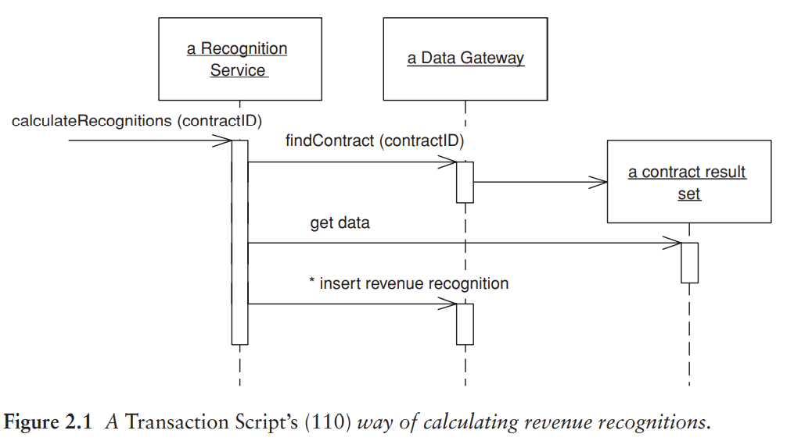
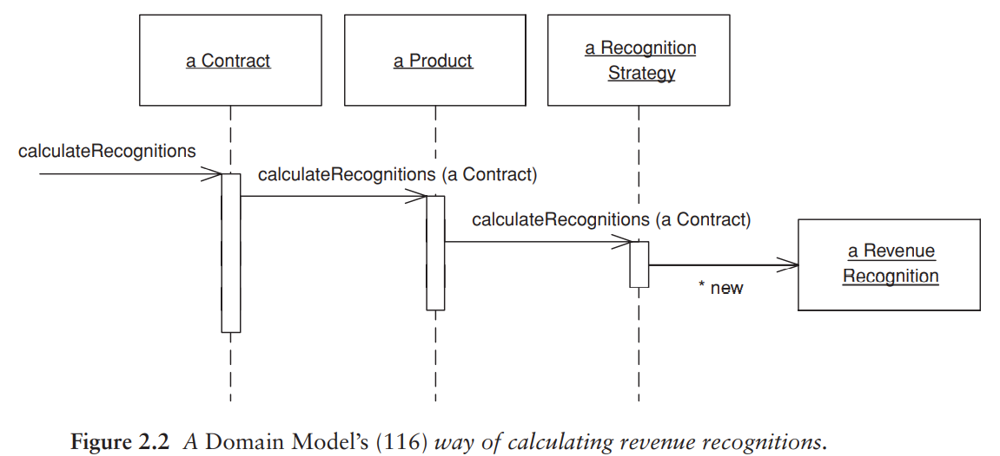
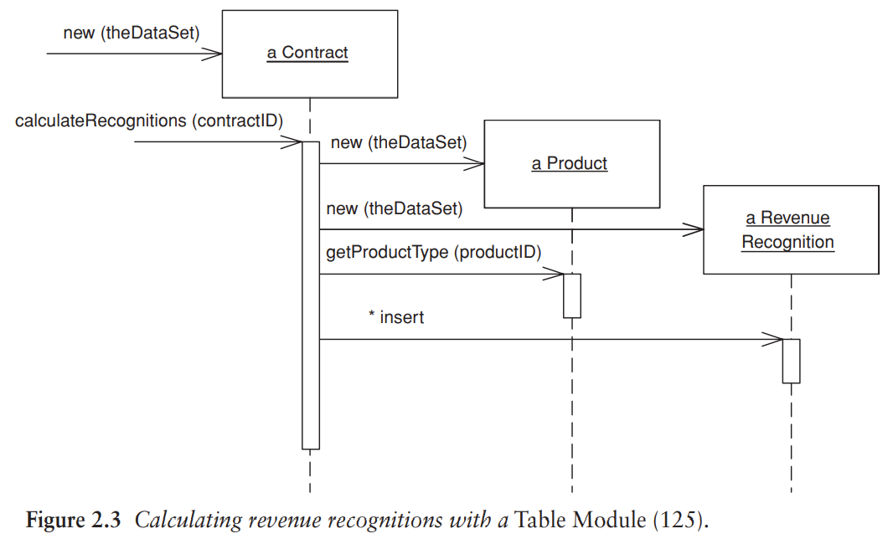
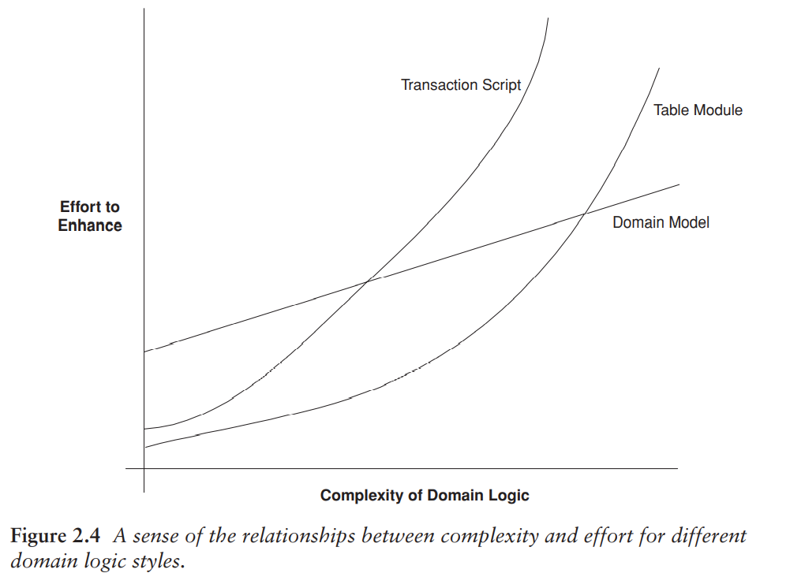

組織領域邏輯¶
組織領域邏輯主要有三種模式：
- Transaction Script
- Domain Model
- Table Module
Transaction Script¶
針對使用者想要執行的每一項操作，使其對應一個程序。
優點：
- 大多數開發人員可以理解的簡單程序模型。
- 能使用 Raw Data Gateway 或 Table Data Gateway 與簡單資料來源層配合良好。
- 如何設置交易範圍的方法顯而易見：從開啟交易開始，到關閉交易結束。使用工具很容易在背景作業做到這一點。
缺點：
- 通常多個 Transaction Script 會出現重複的程式碼，因為某些交易會需要做相似的操作。重複的程式碼難以被發現並移除。
- 使得最後應用程式變得錯綜複雜，沒有一個清晰的結構。
Domain Model¶
一種圍繞著領域行為與資料的物件模型 (an object model of the domain that incorporates both behavior and data)。在 Domain Model 中，由每一個物件來承擔一部分相關的邏輯，而非由一個程序來處理使用者操作上的所有邏輯。
使用 Domain Model 取代 Transaction Script 是物件導向開發人員的典範轉移的精髓。
以下 Figure 2.1, 2.2 循序圖展示了兩種差別。問題的核心在於，不同種類的產品有不同的演算法來確認一個給定合約的收入。計算方法必須確定合約適用哪一種產品並套用正確的演算法，接著建立收入確認物件 (revenue recognition object) 來獲得計算結果。


Figure 2.1 中，calculateRecognitions (contractID) 方法將會完成所有工作；Figure 2.2 中有多個物件，每個都往後轉送部分的行為給另一個物件，直到策略物件建立結果為止。
優點：
- 一旦熟悉 Domain Model，就可以運用現有的技術井然有序的組織複雜邏輯。如果有新的演算法，就加入新的策略物件。如果用 Transaction Script 的話，則需要在許多條件邏輯中加入更多條件。
缺點：
- 如果不熟悉的話會感到困擾，為了尋找行為在何處，必須在多個物件中跳轉。
- Domain Model 越來越豐富時，將它對應到關聯式資料庫就越複雜（通常使用 Data Mapper）。
Table Module¶
與 Domain Model 類似，差別在於 Domain Model 對於每個合約都有一個 instance，而 Table Module 只有一個。Table Module 是與 Record Set 一起使用的。
例如 Figure 2.3：
- Table Module 的用戶端先向資料庫查詢，產生 Record Set。
- 建立一個合約物件，將 Record Set 作為引數傳遞給它。
- 用戶端就可以呼叫合約上的操作來執行各種工作。

優點：
- 提供更大幅度的結構化，讓搜尋和移除重複碼變簡單。
- 方便銜接軟體架構中其他部分。
缺點：
- 無法使用許多在 Domain Model 中那些讓組織結構更完善的技術，例如物件導向的設計模式。
選擇¶

- 這三者不互斥。某些邏輯使用 Transaction Script 同時其它邏輯使用 Table Module 配合 Domain Model 也很常見。
- 熟悉 Domain Model 的開發團隊會降低使用此模式的成本。開發團隊經驗越豐富則越傾向使用 Domain Model。
- 如果一開始選擇使用 Transaction Script，可以中途重構成 Domain Model；如果一開始選擇 Domain Model，則不推薦使用 Transaction Script，除非可以有效簡化資料來源層。
Service Layer¶
另一種處理領域邏輯的方法，是將領域邏輯再分兩層。獨立出來的 Service Layer 將放置在基礎的 Domain Model 或 Table Module 之上。而只使用 Transaction Script 的領域分層不複雜，不太需要再分一層。展示邏輯透過 Service Layer 來和領域層互動，Service Layer 充當應用程式的 API。
- 提供 API
- 交易控制
- 安全性驗證
Service Layer 該有多少的行為？
- 最小化：使用 Facade pattern。所有實際上的行為都在下層的物件中，而 Service Layer 將外觀的呼叫轉送給較低層級的物件。
- Service Layer 可以提供一個容易使用的 API，因為它通常圍繞著使用案例 (Use Case) 來組織。
- Service Layer 可以提供一個進入點，用來加入交易封裝和安全性驗證。
- 將大多數的商業邏輯放入 Service Layer 中的 Transaction Script 中。下層的領域物件變得簡單。
- 如果下層是 Domain Model，它將會和資料庫對應，就可以使用更簡單的資料來源層。例如 Active Record (Ch. 10)
- Controller-entity style: 在 Transaction Script 放一個交易或使用案例的特定邏輯，通常被稱為 controller 或 service。(和 MVC 的 controller 不同)
- 這是個常見作法，但作者不喜歡，因為這容易助長重複的程式碼。如果決定使用 Domain Model，那就全力使用它。
作者建議：如果確定要使用，則盡量使用輕量化的 Service Layer。通常假設一開始不需要，當應用程式需要時才導入，而不是當作軟體架構層次使用。